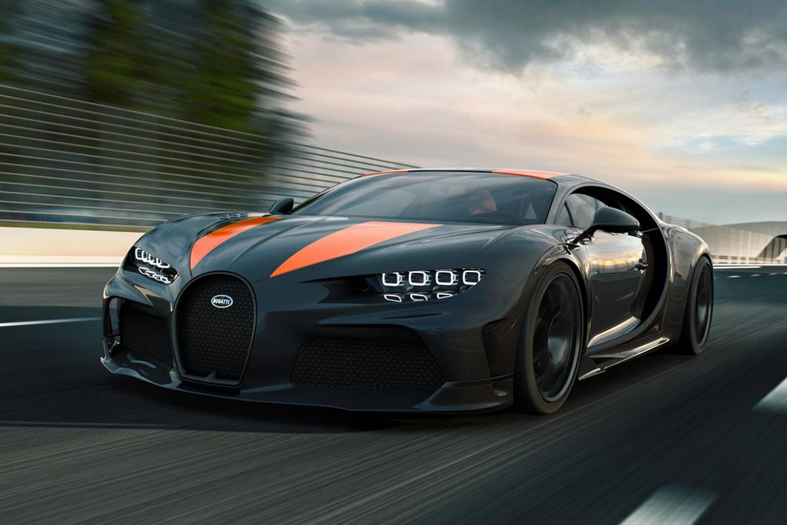
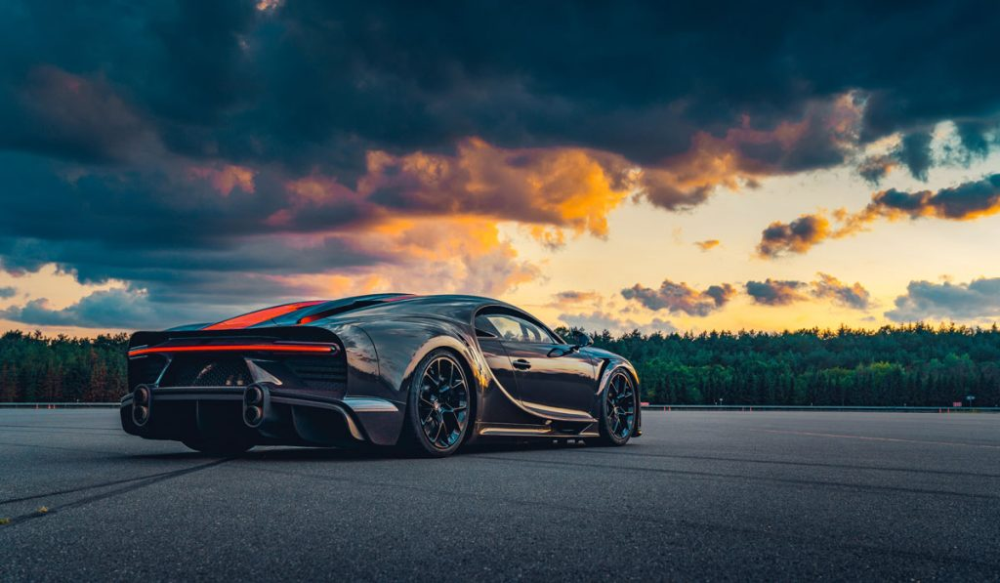
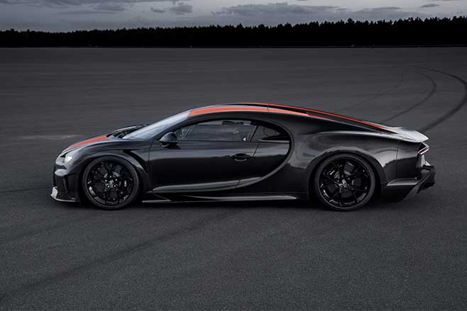

Bugatti Chiron -ის წარმოება 2021 წლის ბოლომდე მოხდება

არის მსოფლიოში ერთ-ერთი ყველაზე პრესტიჟული და ინოვაციური ავტომობილის ბრენდი, რომელიც 1909 წელს Ettore Bugatti-მ დააარსა. დღეს Bugatti Rimac-ის ნაწილი, კომპანია ქმნის ჰიპერავტომობილებს, როგორიცაა Veyron, Chiron და უახლესი Tourbillon, რომლებიც სიჩქარისა და დიზაინის ახალ სტანდარტებს აყენებენ.

Bugatti Veyron (2005): პირველი სერიული ავტომობილი, რომელმაც გადააჭარბა 1,000 ცხენის ძალას და მიაღწია 400 კმ/სთ-ზე მეტს. Bugatti Chiron (2016): 1,500+ ცხენის ძალა, მაქსიმალური სიჩქარე ~490 კმ/სთ. Bugatti Divo: უფრო სპორტული და ტრეკზე ორიენტირებული ვერსია. Bugatti Bolide: ექსტრემალური, მხოლოდ ტრეკისთვის განკუთვნილი მოდელი. Bugatti Tourbillon (2024): ახალი V16 ძრავით, Haute-Couture დიზაინით, რომელიც მომავალი საუკუნისთვის არის შექმნილი.

მფლობელი: Bugatti Rimac (2021 წლიდან). მთავარი ოფისი: მოლსჰაიმი, საფრანგეთი. თანამშრომლები: დაახლოებით 160, ნაწილი გერმანიასა და ხორვატიაშიც. ფილოსოფია: Art. Forme. Technique. — ხელოვნება, ფორმა და ტექნიკა.